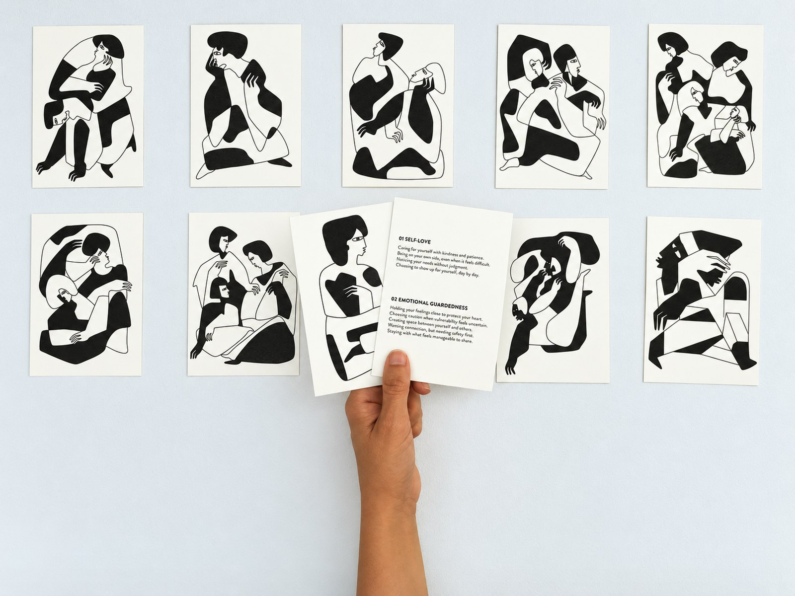
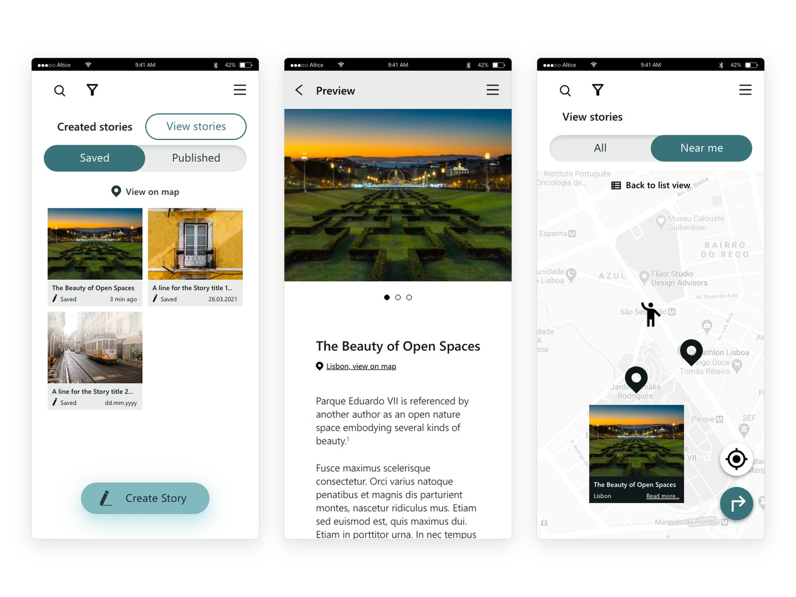
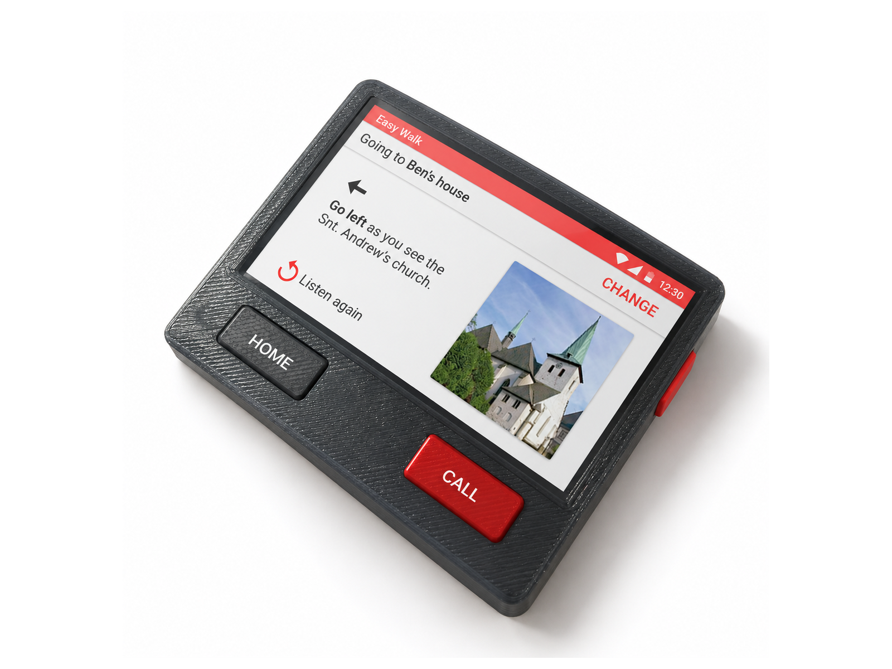
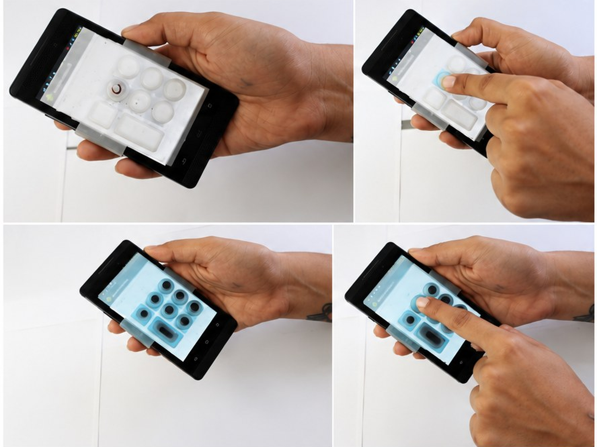
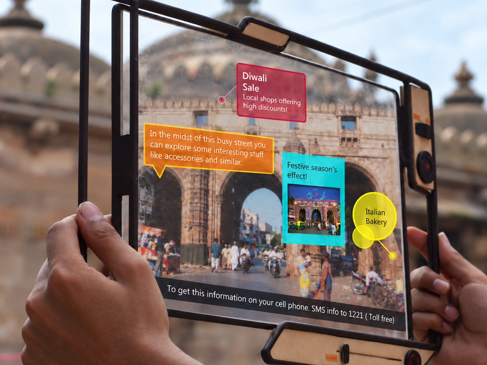
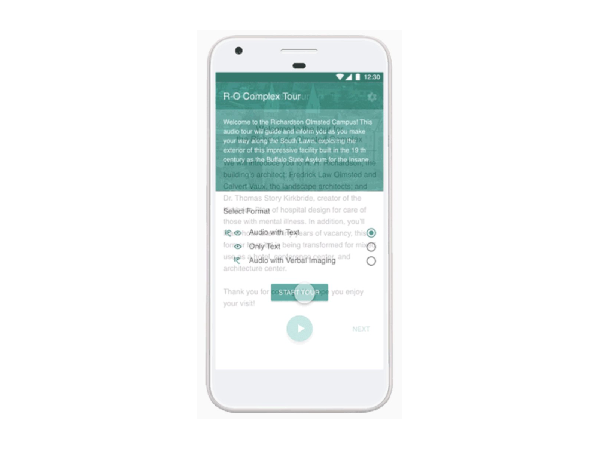
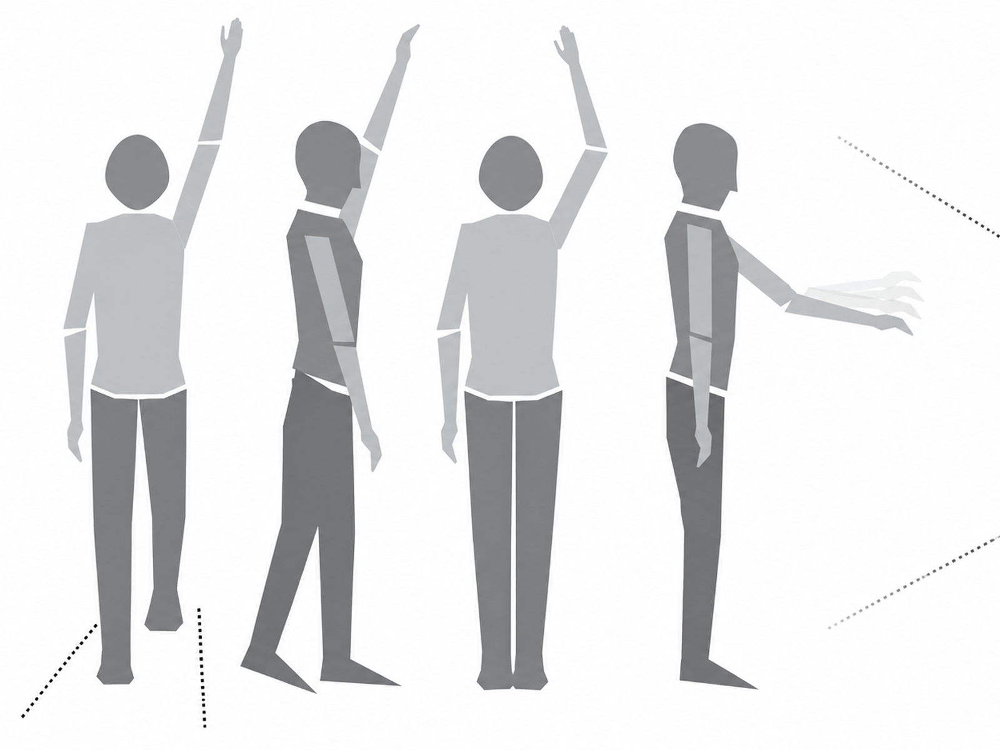
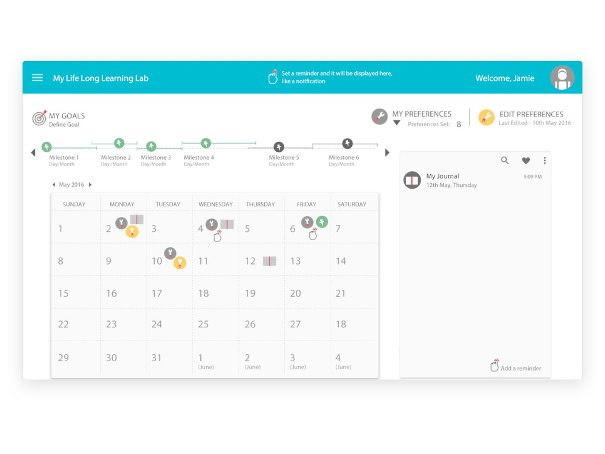
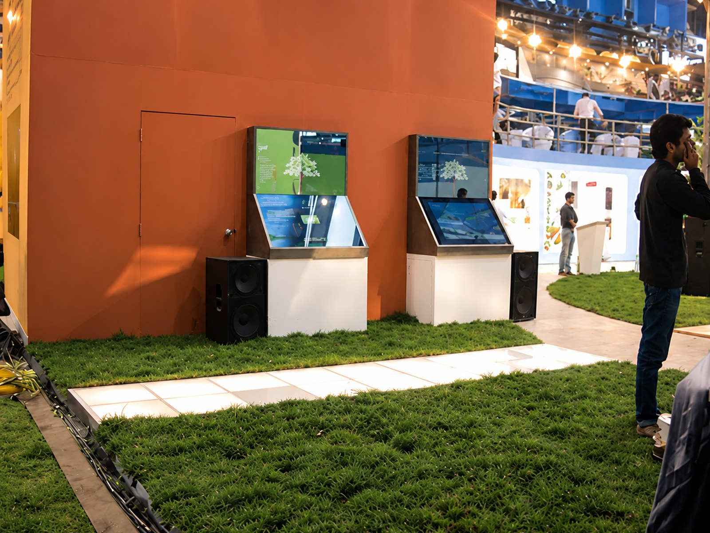

Interfaces, tools and installations, many of them for people who are often left out: blind smartphone users, people living with dementia, visitors to a heritage city, people looking for words for a feeling.

reflecting on emotions with AIHand-drawn emotion cards and AI-generated guidance, tested with visitors at DIS 2025.2025 · read more
a storytelling app for MEMEXThe information architecture, privacy model, screens and style guide of an app for sharing stories about places, built for migrant and marginalised communities.Interactive Technologies Institute, Lisbon, 2020 to 2021 · read more
wayfinding with dementiaA wayfinding tool for people with dementia that guides by their own landmarks, shaped by a month of fieldwork in Arnsberg, Germany.Bauhaus-Universität Weimar and University at Buffalo, 2019 · read more
braille touch padA tangible layer for typing braille on a touch screen, tested with blind users.[year] · INSIGHT 2018 · read more
window to walled cityAn augmented reality window onto the old city of Ahmedabad.National Institute of Design, 2011 · read more
an accessible audio tourA beacon-based tour of the Richardson Olmsted Campus for sighted and blind visitors.Buffalo, 2019 · read more
gestures for a smart TVA library of eight gestures, from unlock to volume, drawn from how people already gesture at screens.Emotome, Ahmedabad, 2012 · read more
my learning labA self-assessment dashboard that helps learners understand their accessibility needs and track their goals.Inclusive Design Research Centre, OCAD University, 2015 to 2016 · read more
AR and installationsA web-based AR viewer that shows apartment plans in 3D on a printed marker, and a touchscreen game installation about sustainability for ONGC.Experiential Design Lab, Delhi, 2010 · read more